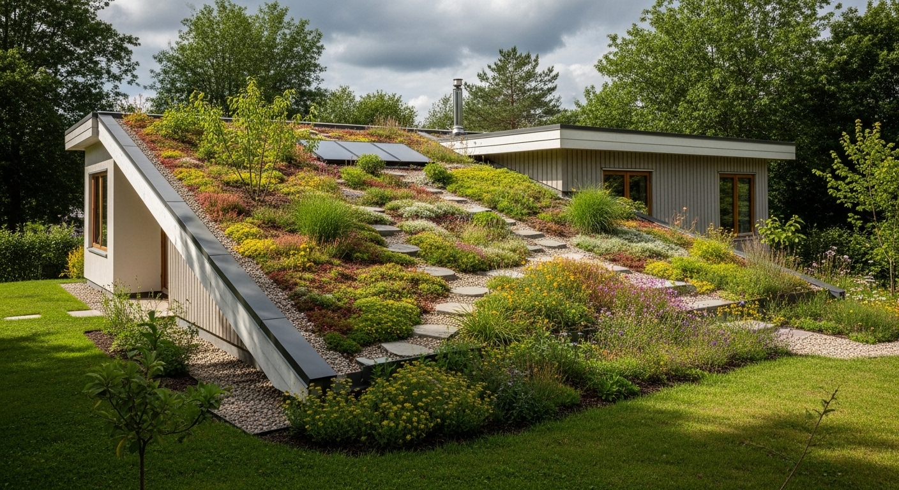
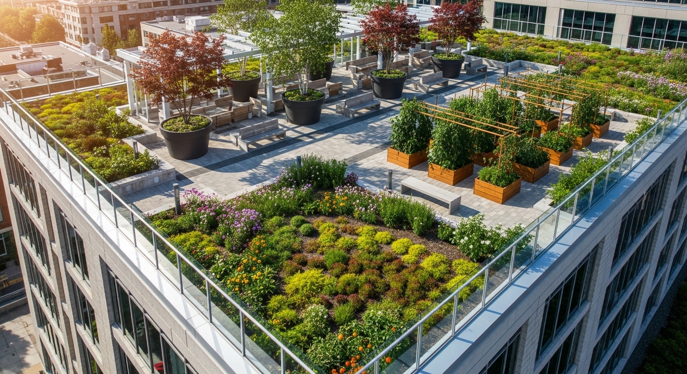
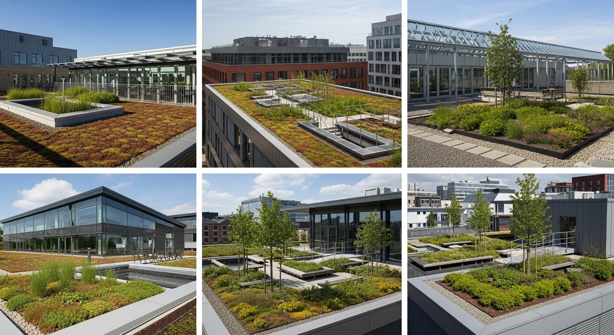
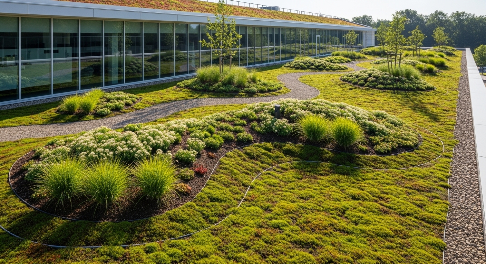
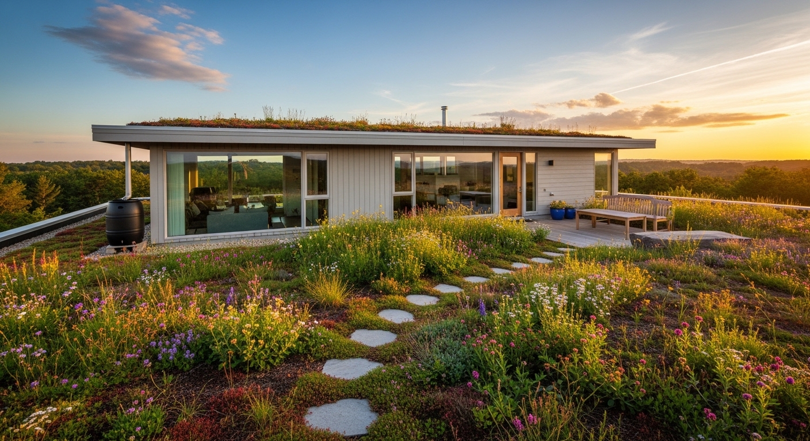
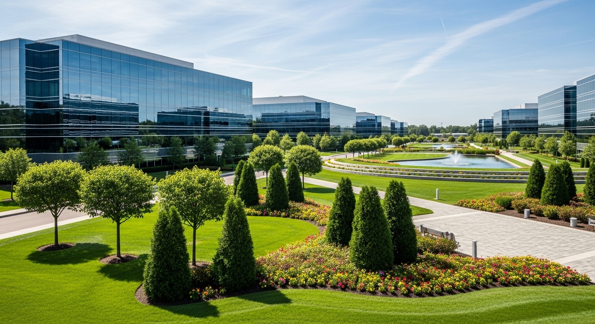
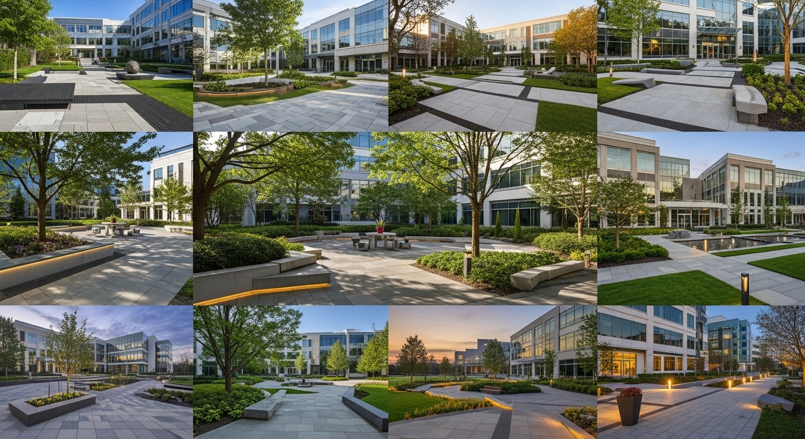

Telhados Verdes
Instalação de cobertura vegetal extensiva ou intensiva, com camadas de impermeabilização, drenagem e substrato leve adequado a espécies resistentes.
Telhados Verdes
Análise estrutural da cobertura
Realizamos análise estrutural com laudo de engenharia, verificando capacidade de carga, inclinação e pontos de fixação antes de qualquer intervenção — segurança como ponto de partida.


Impermeabilização e drenagem
Aplicamos manta impermeabilizante de alta performance compatível com sistemas vivos, com camada drenante que evita acúmulo de água e protege a estrutura do edifício por décadas.


Substrato leve e espécies resistentes
Selecionamos substratos leves e espécies sedums, gramíneas e herbáceas adaptadas a alta insolação e variação térmica — cobertura verde densa com baixíssima manutenção.


Redução térmica e acústica
Telhados verdes reduzem até 3°C a temperatura interna do imóvel, diminuindo consumo de ar-condicionado e o efeito ilha de calor urbano, além de atenuar ruídos externos em até 8 dB.

Certificação ambiental
Assessoramos a obtenção de certificações LEED e AQUA-HQE, documentando os benefícios ecológicos e térmicos para licenciamento ambiental e valorização do imóvel.


{kind=link}
{kind=link}
{kind=link}
{kind=link}
{kind=link}
A natureza também pode estar no alto.